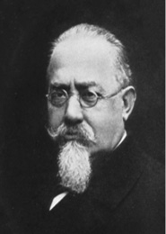

L
labirent (maze) Deneme-yanılma ile öğrenmede kullanılan ve başlangıç-bitiş noktaları bulunan bir düzenek; dolambaç. Denek, hedefe; örneğin yiyeceğe ulaşmak için doğru yolu öğrenmek ve izlemek zorundadır.
labirent testi (maze test) Amaca götüren yollara bağlı birçok çıkmaz sokağı bulunan bir dolambaçta, denekten, amaca götüren yolu bulmasını isteyen bir test.
laboratuvar (laboratory) deneylik, deney odası. 1. Bilim insanlarının bilimsel deneyler ve araştırmalar yapmada kullandıkları ve bu amaçla donatılmış yer; 2. Okullarda fen bilgisi, fizik, kimya, biyoloji gibi derslerle ilgili olarak öğrencilerin deney yapmalarına ve yapılan deneyleri görmelerine olanak sağlayan, bu amaçla donatılmış özel oda.
laboratuvar çalışması (laboratory work) Fizik, kimya, botanik (bitkibilim) gibi belli bir derse ayrılmış laboratuvarlarda öğrencilerin yaptığı öğrenme çalışmaları, gözlem, deney ve araştırma yolları ile kuramın uygulaması çalışmaları. Bkz. laboratuvar.
laboratuvar deneyi (laboratory experiment) Bilimsel yöntemin temel mantığını araştırmaya en etkin biçimde yansıtan yöntem; deney. Laboratuvar deneyinin koşulları, yüksek denetim düzeyi ve kesinliktir. Araştırmacının laboratuar deneyinde yaptıkları, üç noktada toplanıyor: (1) Araştırmayı, eldeki varsayıma (hipoteze) ve araştırmanın amacına göre ayrıntılı olarak düzenliyor. (2) Bağımsız değişkenleri sistemli bir biçimde değiştiriyor. (3) Bu değişkenler dışında sonucu etkileyecek başka değişkenleri denetliyor. Deney yönteminde bağımsız değişken neden; bağımlı değişken de sonuç olarak düşünülüyor ve ikisi arasında bir nedensel ilişki kuruluyıor. Sosyal bilimler içinde laboratuar deneyini en çok psikoloji ve sosyal psikoloji kullanıyar. Birçok bilim felsefecisine ve sosyal psikoloğa göre, bilimsel yöntemle deney yöntemi aynıdır. Deneysel olmayan araştırmalarla bilimin gelişemeyeceği demek olan bu görüş, elbette aşırı bir yaklaşımdır. Ancak, herkesin üzerinde görüş birliğine vardığı nokta şudur: Kuramsal gelişim için varsayım sınaması önemlidir; varsayım sınaması da en etkili biçimde deney yöntemiyle gerçekleştiriliyor. Laboratuvar deneyi ile yapılmak istenen, gerçek yaşamı laboratuvarda taklit etmek değildir. Bununla amaçlanan, etkenleri ayırmak, olanak ölçüsünde en saf bir ortamda bu etkenlerin kimisini tek tek sistemli bir biçimde değiştirmek; kimisini denetleyerek değişmez duruma getirmek ve çeşitli etkileri en saf bir biçimde ortaya koymaktır. Laboratuvar Deneyinin Üstünlükleri: (1) Çalışılan olaylar arasında nedensel ilişkiler kurmaya ve böylece varsayım sınaması yapmaya en çok, laboratuar deneyi olanak veriyor. (2) Sosyal bilim araştırma yöntemleri içinde en etkili denetimler, laboratuvar deneyinde uygulanabiliyor. (3) En saf bir ortamın gerçekleştirilebilmesi nedeniyle bu yöntem, kesin çözümlemelerin, dolayısıyla kesin sayısal, istatistiksel işlemlerin yapılmasını sağlıyor. Laboratuvar Deneyinin Zayıf Yanları: (1) Sosyal bilimlerde olduğu gibi denek olarak insanlar kullanıldığında laboratuar deneyi, çözülmesi zor kimi sorunlar ortaya çıkarıyor. Doğal deney ve alan deneyi için de geçerli olan bu sorun, en çok laboratuvar deneyinde belirgin olarak görülüyor. Deneklerin laboratuvara birlikte getirdikleri beklentileri, önyargıları, başka artalan ve kişilik etkenleri, sonucu etkileyebiliyor. Bunun yanı sıra, deneklerin araştırmacının temel amacına ilkişkin doğru ya da yanlış düşünceleri de davranışlarını etkileyebiliyor. (2) Laboratuvar, yapay bir ortamdır. Türlü etkenlerin birbirinden ayırılarak tek tek çalışıldığı bu saf ortamda elde edilenler, pek çok etkenin karmaşık bir etkileşim içinde olduğu gerçek yaşama kolaylıkla genellenemiyor. (3) Kimi durumlar, laboratuvarda çalışılamıyor. Örneğin, güçlü duygular, acı yaşatan bedensel etkiler ve daha başka uyaranlar, insanlara uygulanamıyor. Laboratuvarda çoğunlukla gerçek yaşamdakinden daha hafif etkileri olan olaylar üzerinde çalışılabiliyor. (4) Laboratuvar deneyine katılan denekler, araştırma amacını öğrenenlerce kasıtlı davranmaları yönünde kandırılabiliyor ve bu, büyük bir ahlaksal sorun yaratıyor. Bkz. yöntem.
laboratuvar gözlemi (laboratory observation) Deneye katılanların tümünün davranışlarının aynı ortamda, aynı denetimli koşullar altında gözlemlenip, görülenlerin kaydedildiği gözlem yöntemi. Bkz. gözlem (Doğal Gözlem).
laf salatası (word salad) Kapsamlı bir anlamı, mantıksal tutarlığı olmayan, rastgele birbirine eklenmiş sözler karması. Şizofrenik bozukluğu olanlarda bu, sıklıkla gözlemleniyor. Bkz. akışkan söz yitimi.
laik eğitim (laic education) Din etkisinden kurtulmuş olan, bireylerin dinsel amaçlarına herhangi bir biçimde karışmayan ve öğretim kurumlarındaki çalışmalar ile din işlerini birbirinden ayrı tutan eğitim. Bkz. laiklik; laik okul.
laiklik (secularism, laicism) 1. Dinsel olmayan geniş bir yaşam görüşü. Laik anlayışta doğa yasalarına uymakta güven bulunuyor; insanın kendi geleceğine kendisinin yön vermesi gerektiğine inanılıyor. Bu anlayışta, her türlü olumsuzluktan, günah korkusuyla değil; yanlış, tutarsız, gelişimi engelleyici davranışların insan onuruna yakışmadığı için uzak duruluyor. 2. Eğitim ve kültürün öbür alanlarının dinin ve din kurumlarının etkisinden kurtarılmış olması. Bu anlayış, dünyada büyük ölçüde Rönesansla başlamıştır.
laik okul (laic school) Öğretim programında din dersine yer verilmeyen, çalışmalarında çocuk velilerinin din ve mezhep ayrılıklarından kaynaklanan etkenlerin etkisi altında kalmayan okul. İnsanlığın lail okula kavuşması için 1789 Fransız Devrimi’nden bu yana savaşım veriliyor. Eğitimci Jules Ferry, F. Buisson, bu savaşımın büyük kahramanlarındandır. Okulun laik bir eğitim kurumu durumuna getirilmesi birkaç biçimde gerçekleşebilmiştir: (1) Okulların öğretim programlarında din dersine yer vermeyerek; (2) Çocuklarına laik öğretim uygulanmasını isteyen velilerin isteklerine uygun laik okullar açılarak; (3) Din dersine girmek istemeyen çocukları bu derslerde serbest bırakarak. Anayasamızda laiklik ilkesi yer almış olmasına karşın bizde laik okul düşüncesini savunan aydın ya da eğitimci çıkmamıştır. Bkz. laik eğitim; laiklik.
LAING, Ronald David (1927-1989) İngiliz psikiyatri uzmanı. Laing, İskoçya, Glasgow’da doğdu. 1951’de Glasgow Üniversitesi Tıp Bülümü’nü bitirdi. 1953’e dek psikiyatri uzmanı olarak orduda görev yaptı. 1953-1956 yılları arasında Glasgow Üniversitesi Kraliyet Hastanesi’nde ve Glasgow Üniversitesi Psikolojik Tıp Bölümü’nde çalıştı. Bu yıllarda süreğen şizofreni davranışlarını gözlemledi. 1956’da gittiği Londra Tavistock Kliniği’nde, deliliğin belirleyicileri olarak kabul edilen belirtilerin anlaşılmaz olmadığını; şizofreniyi, katlanılmaz bir duruma katlanmak için başvurulan bir strateji olarak anlattığı ünlü yapıtı olan Bölünmüş Kişilik’i 1960’ta yayımladı. Bu yapıtı ile büyük yankı uyandıran Laing, kliniğinde uzman arkadaşlarıyla “delilik” sorunu üzerindeki çalışmalarını sürdürdü. 1965’te, ruh hastalıklarının nedenlerini, önleme yollarını araştırmayı ve geleneksel tedavi yöntemlerini uygulamadan kaldırmayı, ruh hastasına deli diye bakmamayı amaçlayan hasta kabul merkezleri oluşturmak üzere Philadelphia Limited Şirketi’ni kurdu. Kimilerinin karşıt psikiyatri dediği ve psikiyatriyi köklü biçimde eleştiren Laing, uygulamaları ve yapıtlarıyla birçok düşünceyi etkiledi. Karşıt psikiyatriye göre, ruh sağlığının ölçütü, kişiyi herkesin sağlıklı kabul etmesidir. Bir kültürde “onaylanamaz” olan davranış, ruhsal bozukluk olarak niteleniyor. Buna göre sağlık, toplumsal bir olay; delilik ise kültürel, toplumsal ve siyasal bir yaftadır. Laing’e göre, psikiyatrist ve psikanalistler, hastaları türlü parçalara bölüyor; ruh hastalıkları hastanelerinde uygulanan yöntemler, sorunu daha da ağırlaştırıyor. Bu anlayışıyla o, Foucault’un yaklaşımına koşut bir yaklaşım sergilemiştir. Ailenin bir toplumsal baskı aracı olduğunu araştıran laing, şizofreninin de aile ilişkileri ağındaki baskının bir ürünü olduğu sonucuna varmıştır. Kimileri, onun, şizofreniyle ilgili yapıtında şizofreniyi anlamayı değil, yüceltmeyi amaçladığını ileri sürmüşlerdir. Başlıca yapıtları: The Divided Self (1960) (Bölünmüş Kişilik), The Politics of Experience (1967) (Deneyimin Politikası), The Politics of the Family (1971) (Ailenin Politikası).
LAMARCK, Jean Batiste De Monetde (1744-1829) Fransız, doğabilimci. Canlıların evrimini, yaşam boyu kazanılmış özelliklerin kalıtımla yeni kuşaklara aktarımı ve türlerin birbirine dönüşmüyle açıklayan “dönüşümcülük kuramı”nın oluşturucusu. Lamarck, Bicardiye bölgesindeki Bazentin-le-Petit’te doğdu; Paris’te öldü. Yoksullaşmış soylu bir ailenin on birinci ve sonuncu çocuğuydu. Babasının uygun görmesiyle başladığı din eğitimini, babasının ölümü üzerine 15 yaşında yarım bırakarak orduya katıldı. Ancak, sağlığının bozulması yüzünden 9 yıl sonra ordudan ayrılarak Paris’e yerleşti. Gittiği yerlerde ülkesinin bitki örtüsünü inceleyen Lamarck, Paris’te botanik ve tıp öğrenimine başladıysa da daha sonra tıbbı bırakarak özellikle botanik çalışmalarına ağırlık verdi. 1778’de yayımlanan üç ciltlik ünlü Flore Française (Fransa Florası), Bilimler Akademisi’ne seçilmesini sağladı. Profesörlüğe yükselen Lamarck’ın önüne, 50 yaşında, canlıların evrimini inceleme olanağı çıktı. Böcekler, solucanlar ve botanik üzerindeki araştırmaları sonucunda dönüşümcülük kuramını geliştirdiyse de kuramı eleştirilere uğradı, sonra da göz ardı edildi. Özel yaşamı da başarısızlık ve mutsuzlukla geçti. 1818’de görme duyusunu yitiren kuramcının son yılları, üç evliliğinden olan sekiz çocuğuyla birlikte yoksulluk içinde geçti. Omurgalı ve omurgasız terimlerini ilk kez kullanan bilim adamı olan Lamarck, fosiller ile yaşayan türler arasındaki ilişkiyi araştırması ile kendisini türlerin evrimi kavramına götüren en önemli çıkış noktalarından birini yakalamış oldu. Doğayı anlamak için gerekli gördüğü birçok alanda araştırmalar yaptı. Birdenbire değişiklikler yerine, sürekli etkili olan koşulların; özellikle okyanusların yeryüzündeki hareketlerinin, bilinen jeolojik olguları zamanla bir birikim sonucu ortaya çıkarabileceğini savundu. Canlıların Yapısı Üstüne Araştırmalar adlı yapıtında işlediği evrim düşüncesini, Zooloji felsefesi adlı yapıtında geliştirdi. Yedi ciltlik Omurgasız Hayvanların Doğa Tarihi adlı dev yapıtının önsözünde, daha sonra Lamarckçılık olarak adlandırılan kuramının yasalarını açıkladı. Evrim sözcüğünü kullanmamakla birlikte, bu konuda ilk geniş kapsamlı bilimsel çalışmayı yapan bilim insanı oldu. Canlıları sınıflandırmaya çalışırken, türlerin basitten karmaşığa doğru ilerleyen gelişimlerini gözlemledi. Bitki ve hayvanların, iki ayrı kökenden geldiğini düşünüyordu. Kendiliğinden türeme kuramının yaratıcısı Lamarck oldu. Türlerin birbirine dönüşümüyle canlılar dünyasında en basitten en gelişmişe doğru uzanan evrim sürecinin dört temel yasasını şöyle özetledi: (1) Doğadaki canlılar, daha karmaşık bir yapıya doğru eğilim gösteriyor (2) Doğaya uyum sağlama amacıyla ve çevre koşullarının etkisiyle beliren bu eğilim, yeni organların oluşmasına yol açıyor. (3) Kullanılan organlar güçleniyor, kullanılmayanlar köreliyor. (4) Böylece kazanılmış özellikler, sonraki kuşaklara aktarılabiliyor. Kazanılmış özelliklerin kalıtımı ya da kuşaktan kuşağa aktarımı demek olan son yasaya Lamarck, ünlü örneği olan zürafanın vücut yapısının evrimini göstermiştir. Ona göre beslenme gereksinimi nedeniyle ağaçların üst dallarına uzanmak zorunda kalan zürafanın boynu ve bacakları giderek uzamış ve bu değişim, kalıtım yoluyla sonraki kuşaklara geçmiştir. Kazanılmış olan bu özelliklerin kuşaklar boyu birikimi sonucunda zürafanın tipik yapısı ortaya çıkmıştır. Küçük birikimler, evrimi zamanla insana varıncaya dek en karmaşık türlere götürebiliyor. Yaşanan çevre koşullarındaki değişiklikten doğan yeni gereksinimlerin oluşturduğu alışkanlıklar da evrim sürecinde itici bir güç oluyor. Lamarck’ın kuramı, evrim kuramına karşı olan ve türlerin, ayrı ayrı yaratıldığını düşünen Cuvier gibi doğa bilimcilerin sert eleştirilerine uğradı ve kısa sürede unutuldu. Bunda, başka birçok etken de rol oynadı. Çağın düşünürleri, İncil’in öğretilerini sarsacak bir evrim kuramını sindirmeye hazır değildiler. Kuramda var olan birçok boşluk da eleştiriya kapı aralıyordu. Lamarck, çevre koşullarının etkisiyle ortaya çıkan değişimleri tümüyle yararlı ve olumlu kabul ediyordu. Kazanılmış özelliklerin kalıtımla aktarıldığına ilişkin ipuçları vermiyordu ve istençli davranış dışında kalan değişimlerin, örneğin, zürafanın benekli derisinin nasıl oluştuğuna yönelik bir açıklama getirmemişti. Bu nedenlerle yıllarca unutulan Lamarckçılık, 1850’lerde Darwin’in evrim kuramını açıklamasıyla yeniden tartışma konusu oldu. Ancak, geçerliğini büsbütün yitirdi. Böyle olmakla birlikte, evrime maddeci yaklaşımı nedeniyle Lamarkçılığın zaman zaman Yeni Lamarckçılık diye gündeme getirildiği olmuştur. Başlıca yapıtları: Flore Française, 3 cilt (1778) (Fransa Florası), Recherche sur les causse des principaux faits physiques, 2 cilt, (1794) (Temel Fizik Olgularının nedenleri Üstüne Araştırma), Hydrogéologie, (1802) (Hidrojeoloji), Recherches sur l’organisation des corps vivants, (1802) (Canlıların Yapısı Üstüne Araştırmalar), Histoire naturelle desvégétaux, 15 cilt (1803) (Bitkilerin Doğa Tarihi), Philosophie zoologigue, 2 cilt (1809) (Zooloji Felsefesi), Histcire naturelle des animaux sans vertébres, 7 cilt (1815-1822), (Omurgasız Hayvanların Doğa Tarihi), Systeme Analitique desconnais sances positives de l’homme (1820) (İnsanın Pozitif Bilgisinin Çözümlenme Sistemi). Bkz. DARWIN, Charles.
Lamarckçılık (Lamarckianism) Canlı varlığın, yaşam süresi içinde organlarından birini kullanmasından ya da kullanmamasından doğan değişimlerin bir kuşaktan ötekine geçtiğini benimseyen bir evrim kuramı.
latens Bkz. gizillik.
Leiter uluslar arası zekâ testi (Leiter international performance test or scale) Belli bir kültürün ya da ulusun etkisinden uzak olarak hazırlanmış olup, dile dayanmayan bir zekâ testi dizisi. Test, kimisinin üzerinde resimler, şekiller, renkler, sayılar bulunan tahta bloklardan oluşuyor. Testi alanın, bu blokları, renk, biçim ve benzerleri bakımından eşleştirmesi gerekiyor. Bu test, 2 -18 yaşlar için standartlaştırılmıştır. Bkz. kültürden bağımsız test; zekâ; zekâ testi.
lenf (lymph) Lenf damarlarında ağır ağır dolaşan, kan plazmasından gelen, içinde akyuvarlar bulunan, saydam, solgun sarı renkli bir sıvı; akkan.
lenfavi (limphatic) Lenf sistemi fazla gelişmiş kişi. Lenfatiklerin cildi aşırı beyaz, eti çok yumuşak oluyor. Ayaklarında şişme ve boyun bezlerinde büyüme görülüyor.
lengüistik Bkz. dilbilim.
leptozom-astenik beden tipi Bkz. Kretschmer’in bedensel yapı sınıflaması.
letarji (lethargy) Günlerce ve çok seyrek olarak da aylarca, dahası yıllarca sürebilen ölüme benzer derin uyku durumu.
Lewincilik (Lewinionism) Alan kuramını geliştiren Kurt Lewin’in görüşlerini benimseme. Bkz. LEWIN, Kurt.
LEWIN, Kurt (1890-1947) Almanya doğumlu Amerikalı psikolog. Lewin, Prusya, Megilno’da (bugünkü Polonya’da) doğdu; Massachusetts, Newtonville’de öldü. Freiburg ve Münih üniversitelerinde felsefe ve psikoloji okudu. 1914’te Berlin Üniversitesi’nde felsefe doktorasını tamamladı. 1921-1933 yılları arasında Berlin Üniversitesi’nde ders verdi. 1932’de kısa bir süre ABD’de Stanfort Üniversitesi’nde konuk öğretim üyeliği yaptı. 1933’te Almanya’ya döndüyse de Yahudi olması nedeniyle, Hitler’in iktidara geçmesi üzerine ülkesinden ayrılmak ve ABD’ye yerleşmek zorunda kaldı. Geçici olarak Cornell Ünüversitesi’nde çalışmasının ardından, 1935’te Lowa Eyalet Üniversitesi’ne çocuk psikolojisi profesörü olarak atandı. 1945’te bu görevinden ayrılıp MassachusettsInstitute of Technology’ye geçti. Burada, Grup Dinamiği Araştırma merkezi’ni kurdu. California, Berkeley, Harvard üniversitelerinde ders verdi. Lewin, felsefe ve kuramsal psikoloji konularında öğrenim görmüştü; ancak, kuramsal varsayımlarını, gündelik deneylerden yararlanarak oluşturdu; yaşadığı toplumsal çevrenin gereklerine uygun araştırma yöntemlerini benimsedi. Kahvedeki garsonların müşteri siparişlerini akılda tutma güçleri, küçük bir çocuğun davranışları, gruplarda demokrat önder ve otokrat önderin oluşması, onun araştırma konuları arasında yer aldı. O, insan deneyim ve davranışının tüm görgül gerçeklerini yansıtan matematiksel bir kuram oluşturmayı amaçlıyordu. Lewin, geliştirdiği alan kuramı ile tanındı. Birey ve çevresinin ayrılmaz bir bütün oluşturduğu, bu kuramın temel varsayımıdır. İnsan davranışı, birey ile onun çevresinin bir işlevidir. Ancak, insan davranışını çevrenin tümü değil, kişinin yaşam alanı olan bölümü etkiliyor. Yaşam alanını, birey ile çevrenin bireye ruhsal etki yapan bölümü oluşturuyor. Bireyin ilgi alanları ya da karşılaştığı çevre koşulları zaman içinde değiştikçe bunlara bağlı olarak yaşam alanı da değişiyor. Bireyin davranışı, o anda var olan güçlerin bir işlevidir. Geçmiş deneyimler ya da geleceğe yönelik beklentiler, ancak, bireyin o andaki yaşam alanına yansıdıkları ölçüde etkili oluyor. Lewin’e göre, bireyi etkileyen olaylar, bireyin çevresinde bir dinamik alan yaratıyor. Birey ve onun çevresi, kendi içinde bölgelere ayrılıyor. Bu bölgelerin her biri, bireyin olası bir eylemini, durumunu ya da yerini temsil ediyor. Bölgeler, birbiriyle çeşitli ilişkilere giriyorlar. Bu ilişkilerin niteliğini, bölgelerin sahip oldukları merkezi konum, birbirinden uzaklıkları gibi etkenler belirliyor. Bölgelerin sayısındaki artış, ruhsal çevrede bir değişim anlamına geliyor. Davranışın anlamının açıklanması da yaşam alanını oluşturan bölgeler arasındaki devinimin açıklanması anlamını taşıyor. Devinim, bireyi etkileyen güçlerin (gereksinimlerin) yarattığı bir sonuçtur. Kimi güçler, bireyin kendi içinden doğuyor. Ötekileri ise bireyi etkileyen uyarılmış çevresel güçlerdir. Bireyin yaşam alanının hangi bölgesinin, ruhsal devinimin o andaki amacını oluşturduğunu ve ayrı bölgelerin birbirini olumlu, olumsuz ya da nötr etkileme kapasitesini, onun bedensel ya da bedensel olmayan gereksinimleri belirliyor. Birey, uyarılmış güçler olmadığında, amaçlanan ya da birbirini olumlu etkileyen bölgelere doğru deviniyor; birbirini olumsuz olarak etkileyen bölgelerden ise uzaklaşıyor. Ancak, uyarılmış güçler, bu tür doğal bir devinimi engelleyebiliyor ya da yönünü saptırabiliyor. Farklı güçler, birbirine karşı durabiliyor ya da önceden kestirilemeyecek yeni güçler oluşturmak için birleşebiliyor. Lewin, bölgeleri ve ruhsal devinimi, matematiğin bir dalı olan topolojinin araçlarını kullanarak belirlemiştir. Lewin’in dinamik kuram ya da topolojik psikoloji adı da verilen alan kuramı, psikolojinin birçok alanını etkiledi. Kuram için ilk uygulama alanı, Gestalt psikolojisinin ilgilendiği algı, dikkat, bellek gibi konular oldu. Ardından, çalışmanın kesintiye uğramasının etkileri, çalışmanın başka şeylerin yerine geçmesi olasılığı, doyum, özenme düzeyi gibi güdüleme sorunlarına uygulandı. Kuramının etkilediği alanlardan biri de çocuk psikolojisidir. Bu alan, Lewin’in ikilem ya da çatışma durumlarının tanımlanması ve bunların çözümleri konusundaki görüşlerinden ve insanın, çevresi ile kurduğu dengenin bozulması sonucu ortaya çıkan sinirlilik ya da gerginlikle ilgili çalışmalarından etkilendi. Lewin, ABD’ye gidişinden sonra özellikle toplumsal eylemler ve sorunlarla ilgilendi. Kuramını davranış değişikliği, önyargı, grup davranışı ve dinamiği, çevrebilimin davranış üzerindeki etkisi, kültürel değerlerdeki değişiklikler gibi konulara uygulanabilecek biçimde geliştirdi. Lewin ve arkadaşlarının bu konulardaki çalışmaları, sosyal psikoloji konusunda daha sonra yapılacak araştırmalara temel oluşturdu. Ancak, alan kuramı, Lewin’in ölümünden sonra etkisini koruyamadı. Bununla birlikte, toplumsal sorunların çözümüne ya da bireysel gelişimin özendirilmesine yönelik çalışmaları, daha sonra da yaygın olarak benimsendi. Öğrencilerinin çoğu, araştırma ve öğrenmeyi bir arada yürüttüler ve toplumsal sorunların çözümü yolunda çaba gösterdiler. Lewin’in davranış değişikliği ve grup dinamiğinde kullandığı eylem araştırması yöntemi, deneysel öğrenme yöntemlerinin geliştirilmesinde etkili olmuştur. Başlıca yapıtları: Principles of Topological Psycholog (1936) (Topolojik Psikolojinin İlkeleri), Resolving Social Conflicts: Selected Papers on Group Dynamics, (ö.s.) (1948) (Toplumsal Çatışmaların Çözülmesi: Grup Dinamiği Üzerine Seçme Yazılar), Field Theory in Social Science: Selected Theoretical Papers, (ö.s.), D. Cartwright (der.) (1963) (Sosyal Bilimde Alan Kuramı: Seçme Kuramsal Yazılar). Bkz.
Kurt LEWIN
ALLPORT, Gordon Willard ; çevrebilim; dış kabuk; duyarlık eğitimi; eylem araştırmaları; güç alanı; HEİDEGGER, Martin; KÖHLER, lokomosyon; T grubu; topoloji; topolojik psikoloji; vektör; vektör analizi.
lezbiyen Bkz. kadın eşcinsel.
lezbiyenlik Bkz. kadın eşcinselliği; sevicilik.
liberalizm (liberalism) Serbestlik, bireysel ve toplumsal özgürlük savunuculuğu. Kamu otoritesinin ekonomik, toplumsal, dinsel ve benzeri süreçlere karışmasına ya da bu süreçleri kendi istediği biçimde yönlendirme girişimlerine karşı çıkılması gerektiğini savunan görüş. Bu bağlamda devletin ekonomiye karışmaması ya da iktisadi yaşamın yönlendirilmesine devletin en az düzeyde karışması gerektiğini; arz-talep mekanizması ya da fiat mekanizmasıyla piyasanın iktisadi ve toplumsal açıdan en yararlı sonuçları üreteceğini ileri süren görüş. Özel sektörün önünü açmak gerektiğinin özlü bir anlatımı olarak “Bırakınız yapsınlar, bırakınız geçsinler.” ilkesini savunan öğreti, iktisadi liberalizm; kamu otoritesinin toplumu oluşturan bireylerin yaşamlarını yönlendirmelerine karışmaması, toplumsal yaşamı biçimlendirmede belirleyici rol oynamaması gerektiğini; “en iyi hükümetin, en az hükmeden hükümet olduğunu” savunan görüş de siyasal liberalizmdir.
libidinal tipler (libidinal tupes) Freud’un, yaşam enerjisinin (libidonun) ruhsal yapıdaki dağılımına dayanarak belirlediği kişilik sınıflandırması. Bu sınıflandırmaya göre ortaya konulan üç kişilik tipinden biri olan erotik tipte libido, büyük ölçüde ilkelbenlik içinde kalıyor ve kişinin temel ilgisinin sevme ve sevilme üzerinde odaklaşmasına yol açıyor. Hastalığa kayınca histeri ortaya çıkıyor. Özsever tipte libido, ağırlıklı olarak benliğe aktarıldığı için kişi, başkalarına ya da benliğin buyruklarına aldırmadan, kendini öne çıkarıyor. Hastalığa sapma durumunda, psikoz ya da antisosyal bozukluıklar görülüyor. Takınaklı tipte ise üstbenlik egemendir. Bu tipin üstbenliği ile benliği arasında şiddetli çatışmalar yaşanıyor. Bkz. Freud’un ruhsal yapı sınıflaması; libido; tipoloji; yapısal kuram.
libido (libido) 1. Psikanalize göre, kaynağını ilkelbenlikten alan ruhsal güç ya da diriklik; yaşam içgüdüsü; cinsel içgüdü; cinsel dürtü, yaşam enerjisi. Bu terim, Freud’un ilk yazılarında, cinsel ağırlıklı bir anlam taşıyordu. Sonraki yazılarında, içgüdü kuramında yaptığı değişikliklere bağlı olarak, her türlü ruhsal gücü (enerjiyi) anlatan ve hem yaşam içgüdüsünü (erosu) hem de ölüm içgüdüsünü (thanatosu) içeren bir kavram olarak kullandı. Freud’a göre, zihnin değişmeyen bir ruhsal gücü (libidinal enerjisi) bulunuyor. Bu güç, her türlü düşünme, algılama, düş kurma, belleme ve cinsel dürtüye yakıt sağlıyor. Freud’a göre, evren gibi ruhsal aygıt da var olan gücü ne yok edebilir ne de yeni güç yaratabilir. Yapabileceği, ruhsal gücü, bir biçimden başka bir biçime dönüştürmek ya da bir yerden (bir işlevden) başka bir yere (başka bir işleve) aktarmaktır. Örneğin, bastırma ve saplantı gibi süreçler, ilkelbenlikten, önemli ölçüde güç kullanıyor ve kişinin öteki işlevlerde kullanabileceği güç miktarını önemli ölçüde azaltıyor. Ruhsal güç, farklı biçimlerde bulunuyor; bağlandığı yere ya da işleve göre, değişik adlar alıyor. Örneğin, ağzcıl, dışkıl, organik libido; benlik, nesne libidosu gibi. 2. Jung’a göre, her türlü biyolojik, cinsel, toplumsal, kültürel ve yaratıcı etkinliği güdüleyen genel bir güç. Jung, Freud’un libido kavramını genişleterek buna, bizi her türlü etkinliğe güdüleyen genel yaşam gücü (yaşam enerjisi) anlamını yükledi. Bkz. Eros; içgüdü kuramı; libidinal tipler; libido akışkanlığı; libido değişimleri; libido esnekliği; libido kuramı; libido örgütlenmesi; yapısal kuram; yük.
libido akışkanlığı (viscosity of libido) psikanalize göre, libidonun bebeklikten yetişkinliğe dek bir dönemden öbürüne yavaş yavaş hareket etme ve daha önceki bir döneme takılı kalabilme ya da dönebilme özelliği.
libido değişimleri (vicissitudes of libido) Libidonun doygunluk eşiği ile seçtiği dört ana yol; sevgeç değişimi. Dört ana yolu şunlar oluşturuyor: (1) Doygunluğun düşler yoluyla gerçekleşmesini sağlayan baskı. (2) Yüceltme. (3) İstek ve duyguları karşıtlarına dönüştürebilme. (4) Dıştaki bir konuya yönelmiş içgüdüsel amacı benlik üzerine çevirme.
libido esnekliği (plasticity of libido) Doyum sağlamada doğrudan yollar kapandığında, libidonun dolaylı doyum yolları arayıp bulma yeteneği; sevgeç esnekliği.
libido kuramı (libido theory) Ruhsal-cinsel gelişimin ve dışavurumun, tek güç kaynağı olan libidodan kaynaklandığını ortaya koyan psikanalitik görüş. Freud, yaşam içgüdüsü ve ölüm içgüdüsü biçimindeki ikili içgüdü kuramını ortaya koyduktan sonra, ölüm enerjisini (saldırganlık dürtüsünü) de cinsel dürtüyle birlikte ele aldı. Bkz. içgüdü kuramı; libido.
libido örgütlenmesi (libido organization) Psikanalize göre, libidonun ağırlıklı olarak yöneldiği ağzcıl, dışkıl, üretken ya da organik diye adlandırılan erojen bölgelerde, öteki erojen bölgelere göre öne çıkan aşama sıralı (hiyerarşik) bir sistem. Bebeklikten gizil döneme dek yaşanan ruhsal-cinsel gelişim dönemleri, libidonun bu dağılımına bağlıdır. Bkz. libido; ruhsal-cinsel gelişim kuramı.
lider Bkz. önder.
liderlik Bkz. önderlik.
Likert ölçeği (Likert scale) Tutum ve davranış araştırmalarında kullanılan anketlerdeki “1. Kesinlikle katılıyorum, 2. Katılıyorum. 3 Kararsızım. 4. Katılmıyorum. 5. Kesinlikle katılmıyorum.” gibi niteleyici değerlendirmeleri nicel çokluklara dönüştüren bir ölçek. Öbür ölçeklerde yalnızca ölçeği benimseme, yadsıma seçeneği varken, bunda 3 ya da 5 basamaklı ölçekle denekten, belirtilen özelliği benimseyip benimsememe derecesini de belirtmesi isteniyor. Deneklerin ölçekte yer alan yargılara ilişkin yanıtları böyle üçlü ya da beşli yanıtlardan birinin belirtilmesine yönelik olan ölçeklete Likert tipi ölçekler deniyor. Bu ölçeklerin amacı, araştırmadan elde edilen verilerin faktör analizinde kullanılabilmesini sağlamaktır. Bkz. THURSTONE, Louis Leon; tutum ölçeği.
liliputyan sanrılar (liliputian hallucinations) Şakak lopu nöbetleri, ateşli ve çözülmeli bozukluklarda ortaya çıkan ve nesnelerin çok büyük ya da çok küçük göründüğü bir sanrı türü. Bu belirti, gerçekte bir sanrıdan çok, nesnelerin büyüklüğü konusundaki bir algı yanılmasıdır. En abartılı biçimi de odanın içinde küçük hayvanların irileşerek hastayı korkuttuğu titreme sabuklaması ve alkolden uzaklaşım sabuklamasında görülüyor. Terim, Swift’in Gulliver’in Gezileri adlı yapıtında anlatılan 15 santimetre boyundaki cüce insanlarla dev cüsseli insanların yaşadığı düşsel ülkelerden esinlenilerek oluşturulmuştur.
limbik sistem (limbic system) Ara beynin hipokampus, amigdala, bazal gangliya, septal bölge gibi beyin yapıları ile bu yapılar arasındaki bağlantılardan oluşan ve istemsiz davranışları denetleyen sistem. Bu sistem, cinsel etkinliklerin heyecansal denetiminin yanı sıra, türe özgü duygular, davranışlar, güdülenme, algı ve bellek süreçlerinde önemli bir etken oluyor. Bu sisteme limbik (sınırda) denmesinin nedeni, beyin kabuğunun sınır sayılan bir kesiminde oluşmasıdır.
Linkoln, Bkz. MASLOW, Abraham.
literatür (literature) Bir konu üzerinde yazılmış yazıların, yapıtların tümü.
lityum (lithium) Özellikle çift kutuplu bozukluk diye adlandırılan manik-depresif psikozun manik evresinde; ayrıca hem manik hem de depresif nöbetlerde kullanılan antipsikotik, antimanik madde ve bu maddeden üretilen ilaçlar. Vücut dokularında bir ölçüde sodyumun yerini alabildiği ve beyin hücrelerindeki serotonin metabolizmasını etkilediği için vücudun sodyum düzeyindeki değişimlere bağlı ruhsal dalgalanmaların denetiminde etkili olduğu düşünülüyor.
lobotomi (lobotomy) Süreğen, ağır psikotik davranışların önlenmesi için ön beyin lop bağlantılarının cerrah müdahalesiyle kesilimi. 19. yüzyıl sonlarında hayvan deneyleriyle başlayan ve 1930’lu yıllarda Portekizli nöropsikiyatrist Antoni Egas Moniz’e Nobel ödülü getiren lobotomi yöntemi, 1950’lere dek büyük ilgi toplamış; ancak, ondan sonra türlü nedenlerle ilgiyi yitirmiştir. Bunun başta gelen nedenlerden biri, lobotominin psikotik ve saldırgan davranışları önlemede fazla etkili olmadığının anlaşılmasıdır. Nitekim Moniz’i, bu yolla tedavi ettiği hastalarından biri kurşunlamış ve Moniz, günü gelmeden emekliye ayrılmıştı. Öbür nedenlerin başlıcalarını beyne verilen geri dönüşü olmayan yıkımlar ile cerrah müdahalesinin, hastaların kişiliği ve duygusal yaşamları üzerindeki apati, duyarsızlık, akıl yürütme yeteneğinin yitirilmesi ve nöbet gibi ağır etkilerine karşı ortaya konulan etik eleştiriler ve daha insani tedavi yöntemlerine yönelik istemler ile antidepresif ilaçların ortaya çıkmasıdır.
LOCKE, John (1632-1704) Deneycilik öğretisini kuran, toplumsal yönetim kavramını temellendirerek çağdaş demokrasinin doğmasına öncülük eden İngiliz düşünür. Locke, Somerset’teki Wrinton’da, iç savaşta I. Charles’a karşı parlamentonun yanında yer alan avukat bir babanın oğlu olarak doğdu; Oates’da öldü. Westminster School’da Yunanca, Latince, İbranice ve Arapçayı öğrendi. 1656’da Oxford Üniversitesi’nde Felsefe öğrenimini bitirdi. 1664’te bu kurumda öğretim üyeliğine başladı. Tıp öğrenimi gördü. Değişik ülkelerde diplomatlık yaptı. Krala karşı tutumu nedeniyle Hollanda’ya kaçmak zorunda kaldı. Kral James’in devrilişinden sonra İngiltere’ye döndü; önemli devlet görevlerinde bulundu. Deneyci yaklaşımın kurucusu olmasına karşın Locke, us ilkelerine bağlılığı önemsedi. Descartes ve Gassendi’nin yapıtlarını inceledikten sonra onların öğretisini temel aldı. Descartes’tan açıklık seçiklik, usa uygunluk, çözümsellik ve varlıkbilim kavramlarını aldı; Gassendi’den de deneycilik ve atomculuk konularında etkilendi. Devlet kuramını oluşturmada ise Hobbes’tan esinlendi. Tasarım (ide), Locke’un bilgi kuramının ana kavramıdır ve ona göre tasarım, zihnin doğrudan kavradığı algı, düşünce ya da duygulanımdır. Buna göre bilgi de bütünüyle tasarımlardan oluşmaktadır. Tüm bilgi, deneyle sağlanan tasarımlardan kaynaklanır. Bu görüş, onun falsefesinin temelidir. Kurduğu deneycilikte, Descartes’ın usçuluğuna karşı çıkmış; doğuştan tasarımlar savını yadsımıştır. Ona göre doğuşta insan zihni düz bir levhadır; ona tüm tasarımlar sonradan deney yoluyla gelmiştir. Zihinde doğuştan getirilmiş tasarımlar olsaydı insan bunların bilincine varırdı. Yalın olan tasarımların da bileşik olan tasarımların da iki deneysel kaynağı bulunuyor. Yalın tasarımlar, beş duyu organından yararlanarak zihne dış dünyadan izlenimler sağlayan, konu olarak dış dünyayı seçen tasarımlar üreten duyum (sensation); bileşik tasarımlar da içduyumdur (reflection’dur). İçduyumun konusu ise zihnin kendi içerikleri, işlemleri ve tasarımlarıdır. Zihnin bu kaynaklardan sağladığı ve yalın olan tasarımları yineleme, karşılaştırma ve birleştirme yetisi vardır. Bu işlemlerle bileşik tasarımlar elde edilir. İşte bu nedenle bilginin tüm öğeleri deneye dayanır. Zihinde yeni, yalın tasarım üretilemez, imgeleme yapılamaz. Yeni diye nitelenen her nesne, yalın tasarımların yeni bileşkesidir. Biçim, devinim, uzam, girilmezlik gibi tasarımlar, görme ve dokunma duyuları ile ayrı ayrı kavranabilir. Rengi görme; ısıyı ise dokunma duyusu ile ediniriz. Yalnızca iç deneyle sağladığımız tasarımlarımız, düşünme ve istençle ilgilidir. Hem iç hem de dış deneyle edindiklerimiz de haz, acı, varlık, güç, birlik ve zamandır. Zihnimiz yalın tasarımları oluştururken edilgin; bileşik tasarımları oluştururken etkindir. Yalın Tasarımı Sırasında Ruhun Gerçekleştirdiği Üç Edim: (1) Bağlayan Edim: Birkaç tasarımı bileşik duruma getiriyor. (2) Düzenleyen Edim: Yalın ya da bileşik tasarımları bir araya getiriyor. (3) Soyutlayan Edim: Bir tasarımı öbürlerinden ayırıyor. Bileşik tasarımları tözler, bunların kipleri ve ilişkileri oluşturuyor. Locke’a göre bilgi, tasarımların uyumu, bağlantısı, uyumsuzluğu ya da karşıtlığının zihince kavranmasıdır. Şu üç aşama, bilginin sağlamlık ve güvenirliğini gösteriyor: Aşamalardan biri sezgisel bilgidir. Bu bilgi, zihnin iki tasarımın birbirine uygunluğunu doğrudan ve kendiliğinden kavramasını sağlıyor. Zihin, karanın ak olmadığını, altının sarı olduğunu böyle biliyor. İkincisi ussal bilgi denen dolaylı bilgi türüdür. Zihin bu bilgiyi iki tasarım arasındaki ilişkiyi başka tasarsımlar yardımıyla kavrıyor. Kesin kanıtlara götürebilmesine karşın bu bilgi, açık seçik değildir. Üçüncüsü de duyusal bilgidir. Algıya dayanmakla birlikte kesin olmayan ve gerçek bilgi değeri taşımayan bu bilgi, insanı kuşatan gerçek bir dış dünyanın bulunduğuna ilişkin inancı konu ediniyor. Lcke’un varlıkbilim görüşüne göre insanı, bir dış dünya çevreliyor. Algıların kaynağı bu çevredir. Dış dünyayı, cisimler ve ruhlar olmak üzere iki türlü töz oluşturuyor. Niteliklerin ve eylemlerin odağı bunlardır. Maddesel tözler olan cisimlerin birincil nitelikleri, girilmezlik, uzam ve devinimdir. Ruhsal tözlerin niteliği ise düşünmeyi, kavramayı ve devinimi başlatan istençtir. Locke’a göre düşünce zihnin öz niteliği değil; eylemi, etkinliğidir. Salt ruh, Tanrı’dır ve yalnızca etkindir. Madde ise yalnızca edilgindir. Algı, maddenin ruhu etkilemesi; eylem ise ruhun maddeyi etkilemesidir. Mekanik yasalara göre devinen cisimler, nedensel ilişkilere bağlıdır. Bir nesnenin, değişik zaman ve yerlerde kendisiyle olan ilişkisi, özdeşlik bağlantısıdır. Kişinin özdeşliği bilincin sürekliliğine; öbür canlıların özdeşliği ise yaşamın sürekliliğine bağlıdır. Locke’un ahlak anlayışının dayanağı, hazcılıktır (hazcı ahlak). Haz veren iyi; acı veren kötüdür. Ancak insanlar bir eylemin ileride getireceği hazzı kestiremedikleri zaman, kısa süreli hazlar uğruna kendilerine uzun süre acı çektirecek eylemlere girişebiliyorlar. Ahlak ilkeleri doğuştan getirilmiyor; deneysel olarak kuruluyor ve öğreniliyor. İnsanın eylem konusundaki inançları da onun vicdanıdır. Ona göre üç tür yasa bulunuyor. Bunlardan birincisi, insanların nasıl davranması gerektiğini kurala bağlayan ve görevlerle günahların temeli olan tanrısal yasadır. İkincisi devletin kolluk güçleri ve mahkemelerince uygulanan ve suçsuzluk ile suçluluğun temelini oluşturan devlet yasasıdır. Toplumu mutluluğa götüren eylemlerle ilgili deneysel genellemeler, erdem ve kötülük düşüncelerini temellendiren yasalar ise kamu yasasıdır. Son ikisinin birbiriyle örtüşen değerlendirmeleri, temelde yararcıdır. Locke’a göre özgürlük ve eşitlik, insanların doğal hakkıdır. Doğa durumu, insanların devlet örgütü altına girmeden, yalnızca ahlak temeline girmeden bir arada yaşadıkları düşünülen durumdur. Onun insanlar arası ilişkileri çözecek bir varsayımı budur. Doğa durumunda insanlar hem özgür hem de eşittirler; bu durumda insanların birbirine zarar vermemesi gerekir. Bu yasaya karşı gelenler, doğa durumu içinde cezalandırılırlar. Doğa durumu, barış, dayanışma, güven ve eşitlik ortamıdır. Devlet ve toplum, bu ortamın yaratılmasıyla oluşur. Her birey, böyle bir toplumda doğa durumunun sağladığı yaptırım gücünü topluma ve devlet yapısına aktarır ve çoğunluğun oyuna uyma kuralı benimsenir. Doğa durumunda her nesne, insanların ortak mülküdür. Ancak, doğal nesneye emeğini katan insan, nesneyi doğal durumundan çıkararak kendi malı yapmıştır. Böylece mülkiyetin temeli atılmıştır. Çağdaş demokrasinin ve özgürlükçü devlet düşüncesinin temelini Locke’un bu felsefesi oluşturdu. Ahlakta doğuştan ahlaklılığın temelini yıkarak İngiliz düşüncesini hazcı ve yararcı yöne yöneltti. En büyük etkisi ise deneyciliği ile gerçekleşti. Yalnızca İngiliz deneycilerini yönlendirmekle kalmadı; 18. Yüzyıl Aydınlanma Felsefesi’ni de etkiledi. 19, yüzyıl pozitivizminin kökeni de Locke’un deneyciliğine dayanıyor. Başlıca yapıtları: An Essday Concerning Human Understanding, 1690 (İnsan Zihni Üzerine Bir Deneme); Two Treatises of Government, 1960 (Yönetim Üzerine İki İnceleme); The Reasonableness of Christianity, 1965 (Hıristiyanlığın Usa Uygunluğu).
logofobi Bkz. konuşma korkusu.
logosağaltım Bkz. logotedavi.
logotedavi Bkz. logoterapi.
logoterapi (logotherapy) Victor E. Frankl’in geliştirmiş olduğu anlam odaklı, varoluşçu yönelimli bir psikoterapi; logotedavi. Frankl’e göre insanı güdüleyen temel güç, yaşamını anlamlı kılma ya da yaşamına bir anlam bulma çabasıdır. Bu çabada başarısız olan kişide varoluşsal boşluk ortaya çıkıyor ve kişi kendini yalnız, yaşamı anlamsız ve boş duyumsuyor. Buna bağlı olarak psikoterapinin amacı, kişiye kendine bir amaç; yaşamasını sağlayacak, varoluşsal boşluğunu dolduracak bir anlam bulması için yardımcı olmaktır. Psikiyatriyi yeniden insanlaştırma savıyla ve Freud ve Adler’den sonra üçüncü Viyana ekolü olarak adlandırılan Frankl’in yaklaşımı, psikodinamik, davranışçı ve varoluşçu psikolojilerin bir karışımı niteliğindedir. Bkz. anlam istemi; aşırı düşünme; düşünce odağını değiştirme; paradoksik amaç.
loğusalık (puerperium) Doğumdan başlayarak kadının vücudunun normal bedensel durumuna döndüğü dönem. Tıp, bunu 42 gün olarak belirlemiştir. Ancak, ruhsal dönüğşüm daha uzun sürebiliyor. Bkz. loğusalık rahatsızlıkları.
loğusalık rahatsızlıkları (pueperal disorders) Loğusalıkta kanama, bitkinlik, enfeksiyon ya da kanda zehirli maddelerin bulunması gibi etkenlerce tetiklenen şizofrenik ve depresif tepkiler, kimi zaman manik nöbetler ya da sabuklama durumu. Bkz. doğum sonrası duygusal bozukluklar; doğum sonrası psikozu; loğusalık.
lokal (local) 1. Belli bir yere, belli bir bölgeye ilişkin; belli bir yerle ilgili; yerel, bölgesel. 2. Belli bir vücut bölgesiyle sınırlı kalan.
lokal amnezi Bkz bölgesel bellek yitimi.
lokalizasyon Bkz. yerelleştirme.
lokomosyon (locomotion) 1. Bir yerden öbürüne hareket. 2. K. Lewin’e göre, kişinin, bir bölgenin ya da bölgelerin değerliliğinin değişmesi nedeniyle kendi yaşam alanında ruhsal yer değişimi yapması. Bkz. LEWİN, Kurt.
LOMBROSO, Cesare (1835-1909) İtalyan hukukçu; çağdaş kriminolojinin kurucusu. Lombroso, Verona’da doğan Lombroso, Torino’da öldü. Yahudi bir aileden gelen Lombroso, 1858’de Pavia Üniversitesi’ni tıp doktoru olarak bitirdikten sonra asker cerrahı olarak çalıştı. Beyin üzerine yaptığı incelemeleri, psikoloji ve psikiyatriye ilgi duymasına yol açtı. 1872 yılına dek on yıl Pavia Üniversitesi’nde psikiyatri dersi verdi. Bu sırada ruh hastalarının fizyolojik özellikleri üzerine ilgisi arttı. İtalya’da sağlık ve suç konuları üzerinde araştırmalar; ölen suçlular üzerinde otopsi yoluyla incelemeler yaptı. 1876’dan sonra, Torino Üniversitesi’nde adli tıp, kamu sağlığı ve psikiyatri konularında; 1906’dan sonra, suç antropolojisi konusunda ders verdi. Kurduğu Psikiyatri ve Antropoloji Arşivi dergisinin yayımını sürdürdü. Lombroso’nun düşüncelerinde Aoguste Comte’un pozitivizminin, Charles Darwin’in evrimci yaklaşımının, Fransız Ruh hastalıkları uzmanı Benedict Morel’in dejenerasyon kuramının ve karşılaştırmalı anatomi uzmanı Bartolomoe Panizza’nın izleri görülüyor. Lombroso, ünlü yapıtı Suçlu İnsan’da, suçu tanımladı ve suç işleyen insanın özelliklerini açıkladı. Ona göre suç, insan organizmasının belirli özelliklerinin bir ürünüdür ve doğum, ölüm gibi doğal bir olaydır. Kimi hayvanların yırtıcı, kimi hayvanların asalak olması gibi, kimi insanlar da suçlu doğuyorlar. Ancak bu, çağdaş insan için doğal değildir; ilkel ırkların özelliğidir; suçlu kişi, evrimin erken dönemine biyolojik bir geri dönüş yapmıştır. Bu nedenle suçlu insan, bir antropolojik tip; çağdaş toplumun yasalarını çiğneyen bir varlıktır. Anatomik, biyolojik olarak yabanıl ve sert bakışları, küçük ve brakisefal kafatası, dar alnı, çukurdaki eğri gözleri, uzun ve geniş yüzü, maymuna benzeyen özellikleri, bol saçı ile tanınıyor. Tat alma ve acı duymada daha az duyarlığı, görmede ve hareketlerinde anormallikler, kadınlaşma ve erkekleşme gibi kimi organların oluşum bozukluklarına bağlı işleyiş farklılığı ile dikkat çekiyor. Ahlak duygusu zayıflığı ya da yokluğu; bencillik, öç alma, hırs duyguları bulunuyor. Tutku aşamasında kumar, alkol, sefahat alışkanlıkları ediniyor. Lombroso, yöneltilen eleştiri ve tepkiler sonucu, görüşlerinde kimi değişiklikler yaptı. Tek suçlu tipi olarak doğuştan suçluyu göstermekten vazgeçerek biyolojik bozulmaların da olabileceğini ileri sürdü. Doğuştan suçlu’ya verdiği önemi hiçbir zaman azaltmamak koşuluyla suçlu tiplerini geri zekâlı suçlu, saralı suçlu, rastlantısal suçlu, alışkanlık yüzünden suç işleyen, öfke ya da hırsla suç işleyen kriminoloid tipi içerecek biçimde genişletti. Suç, Nedenleri ve Çareleri adlı kitabında çevrenin etkisine de belirli bir önem vererek, toplumun suça yönelten özellikleriyle bir ölçüde sorumluluk taşıdığına değindi. Lombroso, suçu, istençten bağımsız bir olay olarak gördüğü için suçluya hasta olarak baktı. Bu nedenle ceza yerine, sağlığı koruma önlemlerinin daha etkili olacağını düşündü. Suçluları toplumdan tümüyle ayırmak yerine, onları üretime sokma çabası gösterdi. Suçluların kurbanlarına bir anlamda, “geri ödeme” yapabilecekleri bir çalışma programı önerdi. Bu çalışmalarıyla Lombroso, 18. yüzyıl hukukçularından farklı olarak, 18. yüzyılın ikinci yarısında ceza hukukuna, pozitivizme dayanan yeni bir anlayışı getirdi. Lommroso’nun kuramı ve suçluların fiziksel özellikleriyle ayırt edilebilecekleri savı geçerliğini yitirse de o, suçluların özelliklerini bilimsel bir temele oturtma çabası ile suç antropolojisinin ve çağdaş kriminolojinin kurucusu sayılıyor. Başlıca yapıtları: Genio e follia (1864) (Deha ve Delilik), La Medicina legale dell’alienazione studiata secondo il metodosperimentale (1873) (Deneysel Yöntemle Akılsal Dengesizlik Üzerine Adli Tıp Çalışması), L’uomo delinquente in rapporto all’antropologia, allagiurisprudenza ed alle discipline carreraie (1876) (Psikiyatri, Hukuk ve Antropoloji Açısından Suçlu İnsan), La dona delinguente, la prostituta e la dona normale (G. Ferrero ile) (Suçlu kadın: Fahişeler ve Normal Kadınlar), Genio edegenerazione: Nuovi studi e nuove battaglie (1897) (Deha ve Dejenerasyon), Il crimine, causa e remedi (1900) (Suç, Nedenleri ve Çareleri).

loplar Bkz. beyin lopları.
LORENZ, Konrad (1903-1989) Hayvanların doğal yaşam ortamındaki davranışlarını inceleyen Avusturyalıı zooloji ve etoloji bilgini. Lorenz, Viyana’da doğdu. Babasının isteği ile tıp okuduktan sonra kendi ilgi alanında bulunan zooloji eğitimi gördü ve 1933’te Viyana Üniversitesi’nde bu dalda doktora derecesini aldı. 1937-1940 yılları arasında aynı üniversitede anatomi ve hayvan psikolojisi dersleri verdi. 1940’ta Königsberg Üniversitesi’nde psikoloji profesörlüğüne ve bölüm başkanlığına atandı. II. Dünya Savaşı’nda hekim olarak Alman ordusuna katıldı; 1944-1948 yılları arasında SSCB’nin savaş tutsağı olarak kaldı. Özgür kalınca Avusturya’da 1949-1951 arasında Altenberg’deki Karşılaştırmalı Etoloji Enstitüsü’nün yöneticiliğini yürüttü. 1951’de Almanya’ya giderek Max Planck Deniz Biyolojisi Enstitüsü’nün Davranış Fizyolojisi Araştırma İstasyono’nu örgütleyip başkanlığında bulundu. 1956-1973 arasında Max Planck Davranış Fizyolojisi Enstitüsü’nün yöneticiliğinde; 1973-1982 arasında Avusturya Bilimler Akadenmisi’ne bağlı Karşılaştırmalı Etoloji Enstitüsü’nde Hayvan Sosyolojisi Bölümü’nün başkanlığını yaptı. 1982’de ise yine Akademiye bağlı olarak kendi adına kurulan Konrad Loranz Enstitüsü Etoloji Araştırmaları İstasyonu’nun yöneticiliğine getirildi. 1964’te Londra’daki Royal Society’nin yabancı üyeliğine seçildi. 1973 Nobel Fizyoloji ve Tıp Ödülü’nü iki kişiyle bölüştü. Çağdaş etolojinin kurucuları arasında yer alan Lorenz, hayvan davranışlarının kendi doğal çevrelerinde ve kendi mantıklarıyla incelenmesi gerektiğini vurgulamakla etolojiye karşılaştırmalı bir bilim dalı niteliği kazandırdı. Birçok hayvan türünün ortak alışkanlıklarını sistemli olarak inceledi; temel güdülerin, hayvan davranışlarını nasıl biçimlendirdiğini araştırdı. Ortaya çıkardığı önemli nokta, hayvanların, basit refleks zincirlerinden oluştuğu sanılan davranışların, çok daha karmaşık ve çevre koşullarıyla çok daha köklü bir etkileşim içinde olduğunu gözlemlemesiydi. Doğuştan gelen davranış modeli olarak adlandırdığı bu davranış kalıpları, ona göre her türde ayrı ve kendine özgüdür. Bu modeller, tıpkı anatomik yapı gibi türleri birbirinden ayırmada kullanılabilir. Kimi organlardaki benzerlik ve işlevsel değerlilik, bu davranış kalıpları için de geçerlidir. Yine Lorenz’in, Tinbergen gibi etoloji bilginleriyle yaptığı çalışmalardan elde ettiği verilere göre, davranış kalıpları, merkezi bir sinir mekanizmasıyla denetleniyor. Bu kalıpları basit reflekslerden ayıran temel özellik, hiçbir uyarıya bağlı olmadan, kendiliğinden ortaya çıkabilmeleridir. Bu kalıpların dışa vurulması, yine de belli çevre koşullarına ve belirli türden salıverme uyarılarına bağlıdır. Lorenz, önemli bir buluş olarak da türlere özgü davranış profillerini çıkardı. Lorenz, türler arasındaski önemli davranış farklarının, daha önce sanıldığı gibi, öğrenmeyle kazanılmadığını; doğuştan geldiğini kanıtladı. Türdeşler arasında, yiyecek, avlanma, eş seçimi, bölge egemenliği için verilen savaşımı da araştıran Lorenz, saldırganlığın yaygın ve kimi durumlarda kalıplaşmış olduğunu; öğrenmeden çok, doğuştan getirilen mekanizmalardan kaynaklandığını saptadı. Son yıllarda bu bulgularını insan davranışlarına uyguladı ve kendi doğal yapısı ile uygarlık koşullarının çeliştiği oranda insanın ruhsal açıdan ve yaşama koşulları açısından zorlandığını; kavga ve savaş eğiliminin doğuştan gelen, bu nedenle de kaçınılmaz bir güdü olduğunu; insanın bu güdüyü toplumun kabul edebileceği kimi etkinliklere yöneltmesi gerektiğini ileri sürdü. Bu görüşü, düşünürler ve toplumbilimciler arasında önemli tartışmalara neden oldu. Lorenz, bir başka olgu olarak da kimi türlerde çevrenin etkisine ve öğrenmeye açık bir kritik dönemin varlığını tanımladı. Özellikle ördek ve kaz palazları üzerindeki araştırmaları ile yumurtadan çıkan yavruda ilk 30-35 saatlik kritik dönemde anne kavramının olmadığını; bu süre içinde annesinin değil; herhangi bir devingen nesnenin anne olarak algılanabildiğini gösterdi. Lorenz, son yapıtlarında, aşırı nüfus yoğunluğu, çevre kirliliği, toplumsal şiddet olayları ve nükleer silahlanma gibi sorunlar üzerinde durdu; insanın, çevresiyle uyum içinde savaşsız bir dünyada yaşaması için çözüm arayarak geniş okuyucu kitlesine ulaştı. Lorenz, kimi görüşleri eleştirilmiş olsa da karşılaştırmalı hayvan ve insanın çevresel sorunlarının yeni bir araştırma alanı olarak gelişmesinde en etkili bilim insanlarından biri oldu. Başlıca yapıtları: Er redete mit dem Vieb, den Vögeln und den Fischen, 1949 (Memelilerle, Kuşlarla ve Balıklarla Konuşurdu); So kam der Mensch auf den Hund, 1950 (İnsan Köpeği Böyle Eğitti); Phylogenetische Anpassung und adaptive Modifikation des Verhaltens, Zeitschrift für Tierpsychologie, (18), 1961 (Davranışın Soyoluş Açısından Uyum ve Uyarlayıcı Değişiklikleri); (1965’te Evolution and Modification of Behavior adıyla kitaplaştırıldı); Das sogenante Böse: Zur Naturgescichte des Aggression, 1963 (Kötülük Denilen şey; Saldırganlığın Yapısı Üstüne); Über Tierisches und Menschliches Verhalten, 1965 (Hayvanların ve İnsanların Davranışı Üstüne); Civilized Man’s Eight Deadly Sins, 1973 (Uygar İnsanın Sekiz Büyük Günahı).
LSD (Lysergic acit diethylamide) Çok güçlü bir psikoaktif uyuşturucu. İlk kez 1938 yılında Albert Hoffman’ın sentezini gerçekleştirdiği kokusuz, tatsız, beyaz kristalize bir pudra olan bu madde, sentetik halüsinojenler arasında en yaygın kullanılanıdır. Güçlü halüsinojenik etkileri ve kısa sürede bağımlılık yaratabilmesi nedeniyle bu madde yasaklanmıştır.
Luria tekniği (Luria technique) Deneğe özgür çağrışım testi uygulama sırasında, bir elinin parmağını çok duyarlı bir kaydetme aracı üzerine basarak el titremelerini saptayan ve öbür elinin parmaklarını da olabildiğince kımıldatmamaya çalışarak heyecan gerginliğini ölçen teknik.